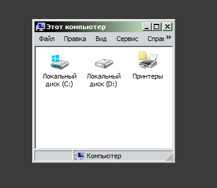
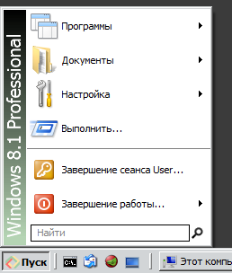
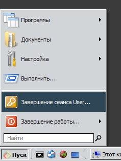
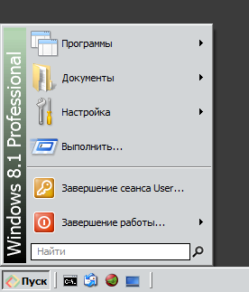

| Classic Shell http://www.classicshell.net/forum/ |
|
| Custom gradient in side inscription. http://www.classicshell.net/forum/viewtopic.php?f=13&t=7887 |
Page 1 of 1 |
| Author: | Anixx [ Fri Sep 08, 2017 2:38 am ] |
| Post subject: | Custom gradient in side inscription. |
Hello! Is it possible to make the gradient in the side inscription of the start menu to be specified from CS settings dialog and/or be taken from the window caption gradient of the current color scheme? For instance, I was trying to create a custom skin for the following color scheme:  I modified the skin, but unsuccessfully, this is what I got after several hours of manipulations in a graphical editor:  The inscription is too stretched in the bottom and the menu is white unlike other elements. It would be great if the gradient could be taken automatically from the current color scheme without need to edit the menu skin. Another, but related issue is the color of selection highlighting of the menu. This also should logically come from the current color scheme:  While I was able successfully to modify the skin, a more convenient approach would be if the selection color came from the current color scheme as in all other applications. |
|
| Author: | Anixx [ Fri Sep 08, 2017 5:14 am ] |
| Post subject: | Re: Custom gradient in side inscription. |
Well, finally I managed to edit the skin to what I wanted using PixelFormer editor (and MSPaint) but it was VERY complicated and should be repeated for each theme.  |
|
| Author: | Gaurav [ Fri Sep 08, 2017 5:23 am ] |
| Post subject: | Re: Custom gradient in side inscription. |
juniper7 might be able to help you in this case. For Windows 7 style, he created an amazing skin that has a color picker. That's easier than editing the skin yourself to change the gradient colors. But as you know, for two column styles, the gradient is not on the side but at the top: viewtopic.php?f=17&t=3131&start=50#p33863 |
|
| Page 1 of 1 | All times are UTC - 8 hours [ DST ] |
| Powered by phpBB® Forum Software © phpBB Group https://www.phpbb.com/ |
|